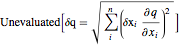
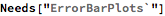

Error Propagation Developer’s Notebook
Short Story: “err[q_, sig_] := Plus@@Map[(err[#]*D[q@@sig,#])^2&,sig]//Sqrt” is nice code for Gaussian error propagation (Wolfram Language doesn’t have it inbuilt for some reason; the Variance function doesn’t really work for simple experimental stuff), given any mathematical function, and its list of arguments. This is better than doing error propagation at every step; just roll your whole calculation into a function. Below: my notebook and the development and testing.
I’m using the Hall Effect to determine properties of a semiconductor like conductivity and carrier mobility. I will start by:
1. calibrating the measurement devices and saving those values.
2. Then I will check the I-V properties.
3. Finally I check the voltage saturation profile for a specific temperature. To do this I need a continuous stream of data. Hopefully there is a way of connecting the multimeter to the computer. Once I’ve got that data stream, I’ll import it into Mathematica and fit it. Is it possible to do that in real time? Real time visualization would allow me to interpret the data while taking it, so I could fix problems immediately. This is doable with Dynamic and ScheduleTask.
4. Measuring approximate sample thickness with a caliper.
5. Test light and wind effects on voltage and temperature.
Once these are done, I’ll have a better sense of my measurements’ accuracy. Then I will do another temperature-resistance profile. Based on the profile I’ll pick an appropriate temperature to do an in-depth measurement (all configurations) to get the resistivity. Then a Hall effect measurement (all configurations) at that temperature to get mobility. Then for one configuration do a temperature-resistance profile to get mobility-temperature characteristic.
First I need to write code that does the uncertainty propagation. I’ll define a datum function that acts as a type, with systemic and random uncertainty separate. Gaussian propagation is the standard, but one should verify that the random uncertainty has such a distribution. The other is to take means with several data points, then it’s guaranteed. What about systemic uncertainty? How should that be propagated? What sort of distribution does it have?

I want to extract the arguments from an arbitrary formula q.
So it’s not easy. Actually recast q as a function.
|
I want to be elegant. I am determined to be elegant! The formula is: . That’s what I need to implement for an arbitrary function. Just get the arguments using Part. Iterate over the arguments, using Fold?



That works marginally well. Now I need to generalize the number of arguments. I somehow need to get the signature. Can I assume that I know it? I think so.

But I would like it to work equally for functions and data points. I can just add another rule in for data. Awesome.
Great. Now some other functions.

Seems right to me. But there’s probably a better way. Given sig, the folding seems unnecessary.
Or even better, multiple definitions! I can’t believe I didn’t think of it before!
Nope this doesn’t work for several reasons. Stick with the earlier one, but no folding. I could also do form err[q_[sig_]], but I’ll leave that.
Weirdly enough, that seems correct! The error in the derivative would be zero, which is weird.
Unfortunately the in-built Variance function doesn’t compute symbolic variance of the parts.

That’s another method for getting the standard deviation, but it’s got a different result. Also depends on the value of x and y.


So the two are equivalent for small values, and as the become a larger percentage of the mean they diverge. They are pretty good up to 20% of the mean, though. So within 5% there’s absolutely no problem using the simpler one. Of course that’s for just one function I tried.

Since magnetic field strength is unknown, start with resistivity. Begin with undoped Germanium. Directly enter voltage and current to get resistances. Then put them through der Pauw eqn. Then fit to supplied theoretical equation.

| Estimate | Standard Error | t-Statistic | P-Value | |
| c | 1579.47 | 161.87 | 9.75766 | 9.44153*10^^-7 |
| e | 0.731514 | 0.00548291 | 133.417 | 5.25234*10^^-19 |
| Estimate | Standard Error | t-Statistic | P-Value | |
| c | 26.8607 | 2.14141 | 12.5435 | 7.36882*10^^-8 |
| e | 0.487564 | 0.00436934 | 111.587 | 3.74399*10^^-18 |
| Estimate | Standard Error | t-Statistic | P-Value | |
| c | 2.66069*10^^14 | 2.10377*10^^-18 | 1.26473*10^^32 | 9.48601172255201.954589770191005*^-349 |
| b | -5.58435 | 0.00315818 | -1768.22 | 2.37762*10^^-31 |

| Estimate | Standard Error | t-Statistic | P-Value | |
| a | 2.00577 | 0.256826 | 7.80984 | 0.0000145278 |
| c | 118811. | 90718.2 | 1.30967 | 0.219595 |
| e | 5924.93 | 262.593 | 22.5632 | 6.58215*10^^-10 |